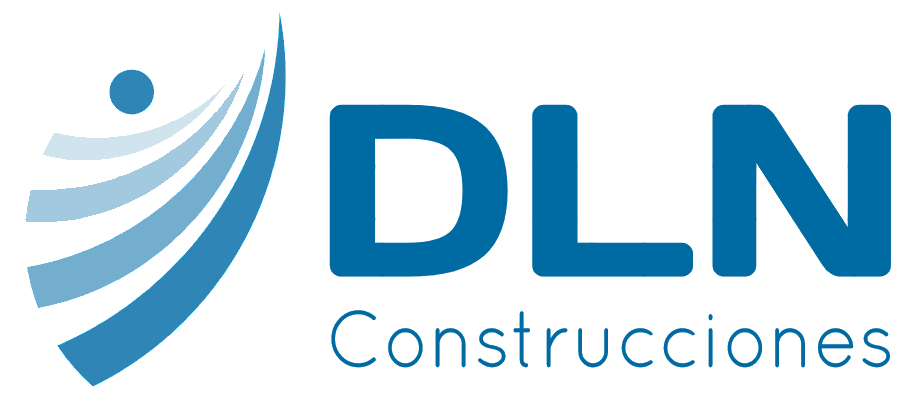

<mat-sidenav-container class="container" autosize>
  <mat-sidenav #sidenav class="sidenav" mode="side">
    <div class="user-image">
      
      <h3 class="primary-dark"><strong>nombre de usuario</strong></h3>
      <button (click)="sidenav.close()"><mat-icon>close</mat-icon></button>
    </div>
    <ul>
      <li [routerLink]="['/home']">
        <mat-icon>home</mat-icon>
        <button (click)="sidenav.close()" >INICIO</button>
      </li>
      <li [routerLink]="['/quienes-somos']">
        <mat-icon>copyright</mat-icon>
        <button (click)="sidenav.close()" >QUIENES SOMOS</button>
      </li>
      <li [matMenuTriggerFor]="serviciosMenu">
        <mat-icon>work</mat-icon>
        <button routerLink="/servicios" >SERVICIOS</button>
        <mat-menu #serviciosMenu="matMenu" yPosition="below">
          <button (click)="sidenav.close()" mat-menu-item [routerLink]="['/servicios/viviendas']">Vivienda</button>
          <button (click)="sidenav.close()" mat-menu-item [routerLink]="['/servicios/piscinas']">Piscina</button>
          <button (click)="sidenav.close()" mat-menu-item [routerLink]="['/servicios/antenas']">Telecomunicaciones</button>
        </mat-menu>
      </li>
      <li [routerLink]="['/trabajos-realizados']">
        <mat-icon>build</mat-icon>
        <button (click)="sidenav.close()" >TRABAJOS REALIZADOS</button>
      </li>
      <li  [routerLink]="['/lotes']">
        <mat-icon>crop_square</mat-icon>
        <button (click)="sidenav.close()">LOTES</button>
      </li>
      <li [matMenuTriggerFor]="profileMenu">
        <mat-icon>person</mat-icon>
        <button>MI CUENTA</button>
        <mat-menu #profileMenu="matMenu" yPosition="below">
          <button (click)="sidenav.close()" mat-menu-item [routerLink]="['/auth']">INICIAR SESIÓN</button>
          <button (click)="sidenav.close()" mat-menu-item [routerLink]="['/auth']">REGISTRARSE</button>
        </mat-menu>
      </li>
    </ul>
  </mat-sidenav>

  <mat-sidenav-content class="content">
    <mat-toolbar >
      <mat-toolbar-row class="p-3">
        <button type="button" class="toggleSideNavButton" (click)="sidenav.toggle()">
          <mat-icon>menu</mat-icon>
        </button>
        
      </mat-toolbar-row>
    </mat-toolbar>
    <router-outlet></router-outlet>
    <app-footer></app-footer>
  </mat-sidenav-content>

</mat-sidenav-container>

